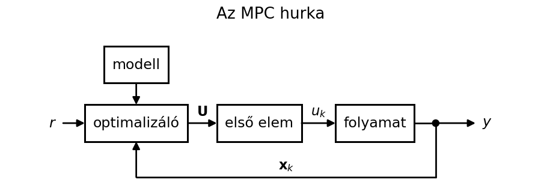
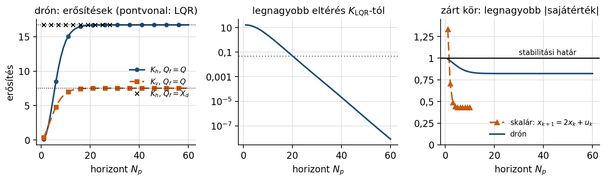

A drónunk (Állapotváltozós alak és a futó példák
modelljei) 1 méterrel a kívánt magasság alatt lebeg. A tolóerő 0 és
20 N között állítható, a lebegéshez 9,81 N kell, tehát felfelé csak
10,19 N tartalék van, lefelé 9,81 N. Egy diszkrét LQR (Az LQR tulajdonságai, véges horizont és diszkrét
idő) azonnal 16,7 N többletet kérne. A szabályozó nem tud a
korlátról: a képlete
,
és ebben nincs hely olyan feltételnek, hogy „ennél többet nem
adhatsz”.
Egy ember másképp vezet. Előre néz néhány másodpercet, elképzeli, mi
történik, ha most erősen fékez, kiválasztja a legjobbnak látszó
mozdulatsort, de csak az elejét hajtja végre, majd az új helyzetben újra
előre néz. A modellprediktív szabályozás (model
predictive control, MPC) ugyanezt teszi: modellel
előrejelez, optimalizál, egy lépést tesz, és elölről kezdi. A korlátok
ebbe a gondolkodásba természetesen beleférnek, ezt a Korlátok és a kvadratikus program mutatja meg.
Most a gépezet vázát építjük fel korlátok nélkül, és arra a meglepő
eredményre jutunk, hogy ekkor az MPC egy jól ismert dolog: lineáris
állapotvisszacsatolás.
26.1.2 Szemlélet
Az MPC minden mintavételi pillanatban
()
a következőket végzi el.
Mérés (vagy becslés): megkapja az aktuális
állapotot.
Optimalizálás: a modellel kiszámítja, milyen
bemenetsorozat adja a legkisebb költséget a következő
lépésben.
Végrehajtás: a sorozatból csak az
elsőt,
-t
adja ki a beavatkozóra.
Eltolás: a következő mintavételkor az ablak egy
lépéssel előrébb csúszik, és minden kezdődik elölről.
Az
a predikciós horizont (prediction horizon): ennyi
lépésre nézünk előre. Mivel az ablak a jelennel együtt halad,
mozgó horizontnak (receding horizon) nevezzük. A terv
további elemeit eldobjuk, mégsem fölöslegesek: miattuk jó döntés az
első.

Az MPC hurka - Minden mintavételkor új
optimalizálás indul a mért állapotból; a tervnek csak az első eleme jut
a folyamatra.
Az alábbi animáció a drónt vezeti 1 méter magasra,
lépéses (0,5 s) horizonttal, úgy, hogy a horizont végén semmilyen külön
büntetés nincs. A szaggatott vonal a pillanatnyi terv, a folytonos a
ténylegesen megtett út. Mielőtt tovább olvasol, tippeld
meg: egybeesik-e a két vonal, ha a modell tökéletes, és nincs
sem zavar, sem zaj?
Statikus változat (mint a PDF-ben)
Mozgó horizont a drón magasságmodelljén:
,
négy időpillanat
A válasz: nem. A
pillanatban készült terv szerint
s-kor a magasság 0,550 m lenne, a valóságban 0,611 m lesz. Ennek nem a
modell hibája az oka. A
-ban
tervező szabályozó számára a világ 0,5 s-nál véget ér. Egy lépéssel
később már egy lépéssel tovább lát, ezért másképp dönt. A terv tehát nem
ígéret, hanem a pillanatnyi legjobb elképzelés. A tolóerő-panelen azt is
látod, hogy a korlátozatlan terv az elején átlépi a 10,19 N-os határt;
ezt most még figyelmen kívül hagyjuk.
26.1.3 Az előrejelzés: a predikciós
mátrixok
A modell diszkrét idejű és lineáris,
állapottal és
bemenettel:
Folytonos modellből nulladrendű tartóval kapjuk (Diszkretizálási módszerek). Ebben az alfejezetben
a rövidség kedvéért
és
.
Az állapot és a bemenet eltérésváltozó: a céltól,
illetve a célhoz tartozó állandósult bemenettől mérjük, így a cél a
nulla.
A
-adik
pillanatból
lépésre előre jelzett állapotot
-vel,
a tervezett bemenetet
-vel
jelöljük;
a mért érték. Helyettesítsünk be lépésenként:
Az általános alak
:
az első tag a szabad válasz (mi történne beavatkozás
nélkül), az összeg a bemenetek hatása. Ez a Megoldás: a mátrixexponenciális konvolúciós
képletének diszkrét megfelelője.
Definíció. Halmozzuk fel az előre jelzett
állapotokat az
oszlopvektorba, a bemeneteket az
oszlopvektorba. Ekkor
mérete
,
-é
.
A
alsó háromszög szerkezete az oksági elvet mondja: egy bemenet csak a
későbbi állapotokra hat.
Beavatkozási horizont. Ha takarékoskodni akarunk a
változókkal, a bemenetet csak az első
lépésben engedjük szabadon változni, utána az utolsó értéken tartjuk.
Ekkor
csak
elemű, és a
utolsó oszlopblokkjába a tartott bemenet oszlopai összeadódnak (3. és 7.
feladat).
Itt
az állapot,
a beavatkozás súlya,
pedig a terminális súly: azt becsli, mennyibe kerül a
horizonton túli jövő.
Gyűjtsük a súlyokat blokkdiagonális mátrixokba:
,
.
Ekkor
.
Behelyettesítve
-t:
ahol
Ez a sűrű vagy kondenzált
(condensed) felírás: az állapotokat kiküszöböltük, csak a bemenetek
maradtak ismeretlenek. A
és
nem függ az állapottól, ezért egyszer, a tervezéskor számíthatók ki;
futás közben csak
változik.
26.1.5 Korlátok nélkül: lineáris
visszacsatolás
Mivel
,
a
pozitív definit, a
tehát „tál alakú”, és egyetlen minimuma ott van, ahol a gradiens
nulla:
Az optimális terv az állapot lineáris függvénye. A
mozgó horizont elve szerint csak az első
elemet hajtjuk végre:
Tétel. Korlátok nélkül a mozgó horizontú MPC az
időinvariáns állapotvisszacsatolás, ahol
().
Szavakkal: bármilyen hosszú a terv, korlátok nélkül az eredmény egy
előre kiszámítható erősítésmátrix; futás közben nem kell optimalizálni.
A zárt kör akkor stabil, ha
minden sajátértéke az egységkörön belül van. Ez nem
automatikus: a „pólus dönt” elv itt is érvényes.
26.1.6 A horizont hossza, a
terminális súly és az LQR
A két módszer ugyanazt a minimumot keresi, ezért
.
Ebből két fontos dolog következik.
Hosszú horizont: ha
,
a rekurzió (stabilizálható és detektálható esetben) a diszkrét
Riccati-egyenlet
megoldásához tart, tehát
.
Terminális súly
:
a rekurzió fixpontja, vagyis ha
,
akkor minden
és minden
.
Már
is pontosan az LQR-t adja, és a terv egybeesik a
valósággal.
Szemléletesen: az
pontosan az a költség, amelyet az LQR a végtelen jövőben még felhalmozna
az
állapotból. Ha ezt tesszük a horizont végére, a rövid ablakon túli világ
nem tűnik el, csak össze van foglalva.

Az MPC-erősítés tartása az LQR-erősítéshez a horizont
növelésével
A drónnál
mellett
esetén a magassághiba erősítése 6,30 a 16,72 helyett: a rövidlátó
szabályozó lustább. A legnagyobb eltérés
-től
kisebb 0,05-nél, és nagyjából mértani sorozatként csökken. A jobb oldali
panel egy instabil skalár példát is mutat, amelynél a túl rövid horizont
instabil zárt kört ad. A nemlineáris modellre épülő,
nemlineáris MPC ugyanezt az elvet követi, de minden
lépésben nem konvex optimalizálást old meg; ezzel itt nem foglalkozunk
[S-RAWLINGS].
5. Terv és valóság. A terv második eleme
.
A valóságban azonban a következő lépésben újra tervezünk:
.
A kettő majdnem kétszeres eltérésű.
6. Rövid horizont.
-nél
,
a zárt köri pólus
:
instabil, pedig minden lépésben optimalizáltunk.
7. Riccati-súly. A skalár DARE rendezve
,
a pozitív gyök
,
és
.
Ha
,
már
is ezt adja.
26.1.8 Kód
A controlkit.mpc.condense adja a sűrű alak mátrixait (a
kódban
neve H,
-é
F,
-é
N,
-é
P), az unconstrained_gain az erősítést.
Először a kézi példa:
import numpy as npfrom controlkit import mpca, b = np.array([[2.0]]), np.array([[1.0]])q, r = np.eye(1), 2* np.eye(1)c = mpc.condense(a, b, q, r, N=2)print("Phi =", c.Phi.ravel(), " Gamma =", c.Gamma.tolist())print("H =", c.H.tolist(), " F =", c.F.ravel())for N in [1, 2, 3, 5, 10]: K = mpc.unconstrained_gain(a, b, q, r, N)[0, 0]print(f"N = {N:2d}: K = {K:.4f}, zárt köri pólus: {2- K:.4f}")K_lqr, X_d = mpc.dlqr(a, b, q, r)print(f"LQR: K = {K_lqr[0, 0]:.4f}, X_d = {X_d[0, 0]:.4f}")
Phi = [2. 4.] Gamma = [[1.0, 0.0], [2.0, 1.0]]
H = [[14.0, 4.0], [4.0, 6.0]] F = [20. 8.]
N = 1: K = 0.6667, zárt köri pólus: 1.3333
N = 2: K = 1.2941, zárt köri pólus: 0.7059
N = 3: K = 1.5108, zárt köri pólus: 0.4892
N = 5: K = 1.5667, zárt köri pólus: 0.4333
N = 10: K = 1.5687, zárt köri pólus: 0.4313
LQR: K = 1.5687, X_d = 7.2749
Most a drón. A reference_drone_mpc() a könyv közös
tervét adja:
,
s,
,
,
(1,5 s), terminális súlynak a Riccati-megoldás.
d = mpc.reference_drone_mpc()A, B, Q, R, X_d, K_lqr = d["A"], d["B"], d["Q"], d["R"], d["P"], d["K"]Phi, Gamma = mpc.prediction_matrices(A, B, N=30)print("Phi:", Phi.shape, " Gamma:", Gamma.shape, " K_LQR =", np.round(K_lqr[0], 3))for N in [5, 10, 20, 30]: K = mpc.unconstrained_gain(A, B, Q, R, N) # Q_f = Q K_X = mpc.unconstrained_gain(A, B, Q, R, N, P=X_d) # Q_f = X_d rho =max(abs(np.linalg.eigvals(A - B @ K)))print(f"N={N:2d} K={np.round(K[0], 3)} rho={rho:.4f} "f"Q_f = X_d mellett LQR: {np.allclose(K_X, K_lqr)}")
Végül a terv és a valóság eltérése
,
mellett, a mozgó horizont kézzel végigjátszva:
x = np.array([-1.0, 0.0, 0.0]) # 1 m-rel a cél alattc = mpc.condense(A, B, Q, R, 10)U = np.linalg.solve(c.H, -c.F @ x) # a teljes tervplan = (c.Phi @ x + c.Gamma @ U).reshape(10, 3)K0 = mpc.unconstrained_gain(A, B, Q, R, 10)xa = x.copy()for k inrange(10): xa = A @ xa - B @ (K0 @ xa) # mindig csak az első lépésprint(f"u_0 a tervből: {U[0]:.3f} N, az erősítésből: {-(K0 @ x)[0]:.3f} N")print(f"t = 0.5 s: terv h = {plan[-1, 0] +1:.4f} m, valóság h = {xa[0] +1:.4f} m")
u_0 a tervből: 14.333 N, az erősítésből: 14.333 N
t = 0.5 s: terv h = 0.5503 m, valóság h = 0.6106 m
26.1.9 Próbáld ki
A mozgó horizont animációjában a „Lejátszás” gomb mintavételenként
lépteti az időt.
Alapbeállítás
(,
).
Léptesd a 0. és a 10. képkockát: az első terv vége 0,550 m, de
s-kor a drón 0,611 m magasan van. A halvány korábbi tervek nem fedik a
megtett utat.
„,
”.
Mielőtt lejátszod, tippeld meg, mi történik a tervekkel. A korábbi
tervek rásimulnak a megtett útra, és az állapotsorban
.
„Rövid horizont”
(,
).
Az erősítés [2,21; 2,09; 0,09], a legnagyobb sajátérték 0,947: lassú,
túllövő válasz,
s-kor még 1,044 m. Állítsd
-t
1-re és
-t
2-re: a drón alig mozdul, mert két lépés alatt a tolóerő hatása a
magasságban szinte nem látszik, a beavatkozás viszont azonnal
kerül.
„Hosszú horizont” és kis
().
Az erősítés nagy, [33,33; 12,36; 0,51], és az első lépés messze a korlát
fölött van. Ezt a korlátot a következő alfejezet építi be a tervbe.
26.1.10 Tipikus hibák
Tünet: a szimulációban a teljes
sorozatot hajtjuk végre, és csak a horizont végén tervezünk újra.
Ok: a mozgó horizont elvének félreértése.
Javítás: minden mintavételkor új terv, és csak
kerül ki; különben a zavarokra
lépésig nincs válasz.
Tünet: rövid horizontnál a zárt kör lassú vagy
instabil, pedig „optimális”. Ok: az optimalitás csak a
horizonton belül értendő, a horizont vége utáni következmények ingyen
vannak. Javítás:
terminális súly, vagy a lecsengési időt lefedő horizont.
Tünet: az MPC-erősítés pontosan a kétszerese vagy a
fele a vártnak. Ok:
-ban
szerepel a 2-es szorzó, az
-ben
nem (vagy fordítva). Javítás: következetesen
alakot használj, és vesd össze a Riccati-rekurzióval.
Tünet: az előrejelzés teljesen eltér a
szimulációtól. Ok: a folytonos
,
került a predikciós mátrixokba. Javítás: előbb
diszkretizálj a szabályozó mintavételi idejével.
Tünet: a szabályozó a nulla állapot felé húz, pedig
a cél 1 m. Ok: az eltérésváltozók elhagyása.
Javítás: az állapotból vond ki a célállapotot, a kapott
bemenethez add hozzá a célbemenetet (MPC a
gyakorlatban: követés, zavar, stabilitás, számítási idő).
26.1.11 Önellenőrzés
Miért csak a terv első elemét hajtjuk végre?
Mit jelent a
mátrix jobb felső nullás része?
Miért számítható ki
és
előre, és mi változik futás közben?
Milyen
mellett egyezik az MPC az LQR-rel tetszőleges horizontnál, és
miért?
Következik-e a minden lépésben végzett optimalizálásból a zárt kör
stabilitása?
26.1.12 Feladatok
(A) Írd fel
-t
és
-t
az
rendszerre,
-ra.
(A) A drónnál
és
.
Mekkora
,
és
?
(B) Az
rendszerre,
,
tetszőleges
és
mellett milyen
-re
stabil a zárt kör?
(B) Számítsd ki kézzel
-t
a kézi példában
-ra
a Riccati-rekurzióval.
(B) Bizonyítsd be, hogy ha
,
akkor
minden
-re.
(C, programozás) Keresd meg a drónnál azt a
legkisebb horizontot
(),
amelynél
minden eleme 0,05-nél kisebb hibával közelíti
-t.
(C, programozás) Vizsgáld meg
,
mellett, hogyan függ a drón erősítése és a zárt köri sajátértékek
legnagyobb abszolút értéke a beavatkozási horizonttól
().
Magyarázd meg, miért „lusta” a
eset.
26.1.13 Rövid összefoglaló
A modellprediktív szabályozás mozgó horizonton dolgozik: minden
mintavételkor optimalizál
lépésre, de csak az első bemenetet hajtja végre. A lineáris modell
előrejelzése
,
a kvadratikus költség sűrű alakja
(plusz állandó). Korlátok nélkül
,
tehát az MPC a
lineáris visszacsatolás, és
megegyezik a véges horizontú Riccati-rekurzió
erősítésével. Hosszú horizonton, illetve
terminális súllyal bármely horizonton az LQR-t adja. Rövid horizont
mellett lassú vagy instabil kört okozhat; a terv és a valóság ekkor
eltér.
26.1.14 Megoldások
26.1.14.1 Válaszok az önellenőrző
kérdésekre
Mert a következő mintavételkor friss mérés érkezik, és a horizont
egy lépéssel tovább lát; az újratervezés kezeli a zavart és a
modellhibát. Ez adja a visszacsatolást.
Az oksági elvet: a
-edik
bemenet nem befolyásolhatja a nála korábbi állapotokat.
Csak a modelltől, a súlyoktól és a horizonttól függnek. Futás közben
az
vektor változik (korlátoknál a korlátok jobb oldala is).
:
ez a Riccati-rekurzió fixpontja, és éppen a horizonton túli optimális
költséget adja meg.
Nem. Az
skalár példa minden lépésben optimalizál, mégis instabil
(
a pólus).
26.1.14.2 A feladatok
megoldásai
1.
(oszlopvektor),
.
2.
,
:
,
,
.
3.
,
a pólus
.
Ez pontosan akkor kisebb 1-nél, ha
.
Drága beavatkozás mellett az egylépéses szabályozó nem stabilizál.
4.
,
,
,
,
.
.
5. Teljes indukció visszafelé.
.
Ha
,
akkor
,
és
,
ami a diszkrét Riccati-egyenlet szerint
.
Tehát
.
6. Ciklusban
unconstrained_gain(A, B, Q, R, N), és
figyelése.
-nál
az eltérés 0,051,
-nél
0,034, tehát a válasz
(1,05 s).
for N in [20, 21]: K = mpc.unconstrained_gain(A, B, Q, R, N)print(N, f"{np.max(abs(K - K_lqr)):.4f}")for Nu in [1, 2, 5, 10]: K = mpc.unconstrained_gain(A, B, Q, R, 30, P=X_d, Nu=Nu)print(Nu, np.round(K[0], 3), f"{max(abs(np.linalg.eigvals(A - B @ K))):.3f}")
7. A fenti kimenet második fele.
-nél
egyetlen tolóerő-értéket kell 1,5 s-ig tartani. Egy nagy érték a végén
messze a célon túlra vinné a drónt, ezért az optimalizáló nagyon kicsit
választ: az erősítés 1,0 a 16,7 helyett.
a másik véglet: egy erős lökés, majd egy tartott ellenlökés.
és 10 körül az erősítés már közel van az LQR-éhez. A beavatkozási
horizont tehát nem csupán számítási takarékosság, hanem megváltoztatja a
szabályozó viselkedését, és a hatása nem monoton.